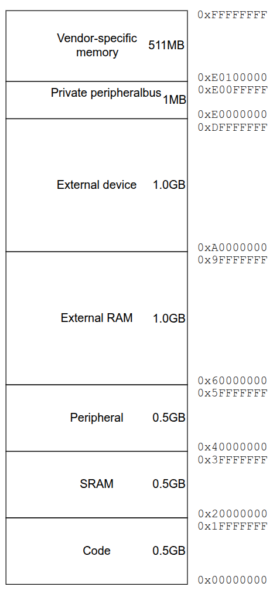

Lecture 4
Paul Fiterau
Memory Management
Memory Architecture
- µCs often use a (variation of) Harvard architecture
- Separate memory + buses for code (ROM) and data (RAM)
- Allows instructions (code) and data to be fetched simultaneously
- Code is usually eXecuted In Place (XIP), not copied to RAM before execution
- Saves writable memory
- Some amount of RAM/ROM is integrated in the µC
- Can be extended through external memory if needed
- RP2350 actually relies on external ROM (Flash)
Read-only Memory (ROM)
- Non-volatile: preserves contents when power is off
- Used to store code + constant data (e.g. lookup tables)
- Unrestricted reading, usually difficult to write
- Most common (today): Flash memory
- Fast reads
- Slow writes, limited in number, can be "coarse"
- Other kinds do exist: PROM, UV-EPROM, EEPROM
- Pico 2 Board has 4MB Flash (external), RP2350 has 32kb ROM for bootloader
Random-Access Memory (RAM)
- Volatile: loses contents when power is off
- Used for data (e.g. stack, heap)
- Unrestricted reading and writing
- Two kinds in use today: SRAM, DRAM
- SRAM: faster but larger and more expensive
- DRAM: cheaper and denser, but needs to be refreshed
- May cause unwanted variability in memory access times (wait or refresh...)
- RP2350 has 520kB on-chip SRAM

RP2350 Datasheet
Address Map
- Determines how addreses get mapped to hardware
- Address space determined by processor address width
- Cortex M33 has 32 bit addresses => 2^32 address space (4GB)
- RAM, ROM, peripheral registers, ... are mapped into different address regions
- Details depend on the implementation of the chip
Address Map of ARM Cortex M33
- Check RP2350 Datasheet (Section 2.2) for specifics
Read - Modify - Write
- We often want to set a single bit in a register
- Typically, a CPU cannot write individual bits, only entire bytes or even words
- If we want to set a single bit, we need to
- Read the whole register
- Modify one bit (i.e., do some logic operation)
- Write the modified value back into the register
This is not atomic!
Solution 1 - Bit-Banding
- Optional feature of ARM Cortex-M3 and M4 µCs
- 1MB of bit-band region is mapped to 32MB alias region
- Each bit in bit-band region corresponds to a full word in alias region
- We can set a single bit by writing a full word in the alias region
- We can read a single bit by reading from the alias region
- Used for example by STM32 chips
- More info: ARM Developer Manual
Solution 1 - Bit-Banding

Solution 2 - Bit Set and Clear Registers
- Used by RP2350 and RP2040
- A register with multiple bit fields has dedicated SET and CLR registers
- Writing a word to SET will set all bits in the main register that are set in the word
- Writing a word to CLR will clear all bits in the main register that are set in the word
Examples of Bit Set and Clear Registers in RP2350
- GPIO_OUT sets output level (1/0 → high/low) for GPIO0…31
- GPIO_OUT_SET performs atomic bit-set on GPIO_OUT
- Effectively: GPIO_OUT = GPIO_OUT | wdata
- GPIO_OUT_CLR performs atomic bit-clear on GPIO_OUT
- Effectively: GPIO_OUT = GPIO_OUT & ~wdata
- Check RP2350 Datasheet (starting p. 61) for specifics
Ways to manage memory
- At compile time (statically)
- At runtime (dynamically)
Management at compile time

Management at compile time

Management at compile time
- Compiler/Linker creates sections for different kinds of data/code
- Code (.text)
- Read-only data (.rodata)
- Read-write data (.data)
- Zero-initialized read-write data (.bss)
- More sections possible, depends on implementation and compiler/linker
- RAM is initialized during start-up
Management at compile time
- Mapping of data to sections can be automatic (static, const) or explicit (compiler specific, gcc: #pragma)
- Layout of sections in memory can be chosen in linker script
- Examples (assume global variables)
- char rwData[100]; => .bss, RAM
- char raData[3] = {1, 2, 3}; => .data, RAM
- const char roData[3] = {1, 2, 3}; => .rodata/.constdata, ROM
Example ELF file
Dynamic memory management
- Manual management: malloc( ), free( )
- More flexible, might be necessary in some cases
- Can cause various problems
- Possibly insufficient memory during runtime
- Memory leaks (did you free?)
- Fragmentation
- Implementation of malloc and free can be of substantial size
- Are malloc and free reentrant functions?
Malloc and free
- Often implemented by the (RT)OS
- FreeRTOS
- Heap_1: only malloc, no free
- Heap_2: malloc + free
- Heap_3: malloc + free, both thread-safe
- Heap_4: same as Heap_3, but tries to avoid fragmentation
- Zephyr
- Heaps can be created with K_HEAP_DEFINE
- Can use thread-safe k_heap_alloc and k_heap_free
- Use of libc malloc and free is discouraged
- For more info look into the documentation!
Memory management best practice
- Allocate all required memory at compile time
- Sometimes enforced by coding standards
- Little risk of runtime errors due to memory management problems
- If dynamic allocation is unavoidable, do it only at start-up where possible
Dir 4.12 Dynamic memory allocation shall not be used
MISRA C:2012
Recursive Factorial - Problems?
#include
#define STACK_SIZE 100
int factorial(int i) {
if (i == 1) {
return 1;
} else {
return i * factorial(i-1);
}
}
...
Task stack overflow detection
- Canaries
- Initially write some known data/pattern to the end of the stack
- Periodically check wether that data is still there
- In Zephyr => CONFIG_STACK_SENTINEL, gets checked at
- Context switch
- Hardware interrupts
- Thread termination (return from entry point)
- k_yield
- In Zephyr only used when there is no MPU
Memory protection unit
- Can define access rules (e.g., privileged only vs full) for different memory regions
- When an access rule is violated => fault exception
- MPU can be used to, e.g.:
- prevent tasks from corrupting stack/memory of other tasks and OS
- set certain memory regions read-only to prevent accidentally erasing configuration data
- prevent unpriviledged tasks from accessing peripherals
- More info: ARM Developer Manual